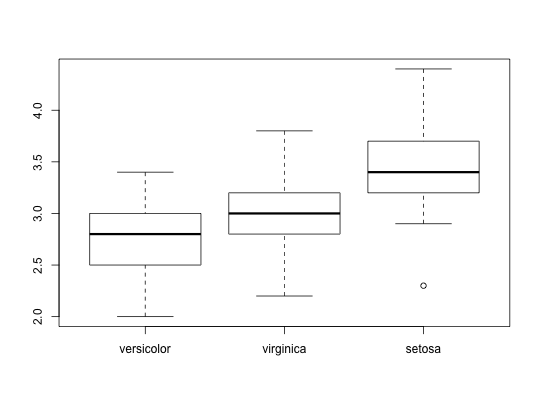
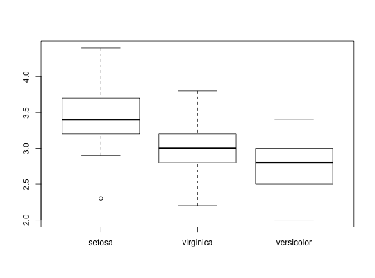

Reorder the levels of a function according to another variable
Usage
fct_reorder(f, x, fun = median, ..., .desc = FALSE) fct_reorder2(f, x, y, fun = last2, ..., .desc = TRUE)
Arguments
- f
- A factor
- x, y
- fun The levels of
fwill be reordered so thatfunapply to each group is in ascending order. - fun
- An summary function. It should take one vector for
fct_reorder, and two vectors forfct_reorder2. - ...
- Other arguments passed on to
fun. A common argument isna.rm = TRUE. - .desc
- Order in descending order? Note the default is different
between
fct_reorderandfct_reorder2, in order to match the default ordering of factors in the legend.
Description
fct_reorder is useful for 1d displays where the factor is mapped to
position; fct_reorder2 for 2d displays where the factor is mapped to
a non-position aesthetic.
Examples

chks <- subset(ChickWeight, as.integer(Chick) < 10) chks <- transform(chks, Chick = fct_shuffle(Chick)) if (require("ggplot2")) { ggplot(chks, aes(Time, weight, colour = Chick)) + geom_point() + geom_line() # Note that lines match order in legend ggplot(chks, aes(Time, weight, colour = fct_reorder2(Chick, Time, weight))) + geom_point() + geom_line() + labs(colour = "Chick") }